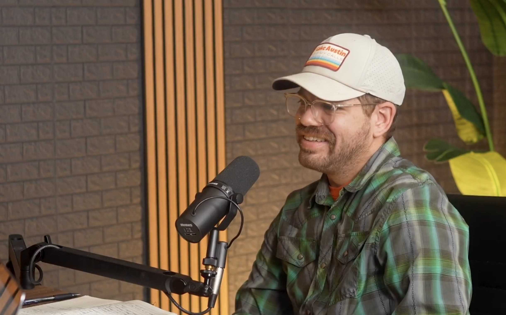
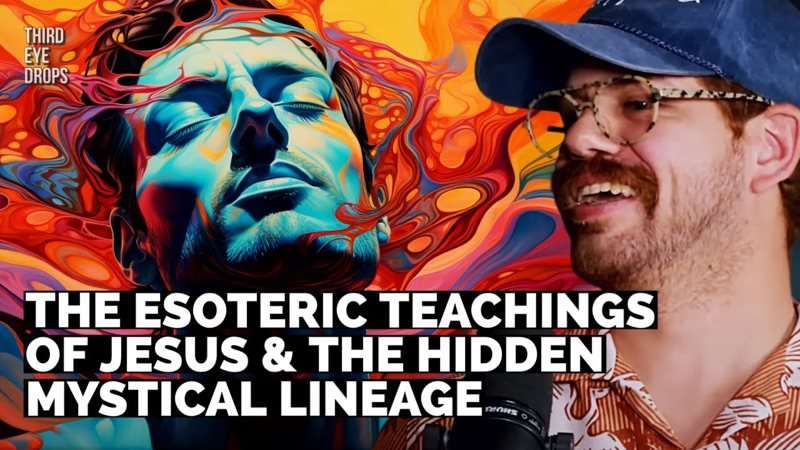
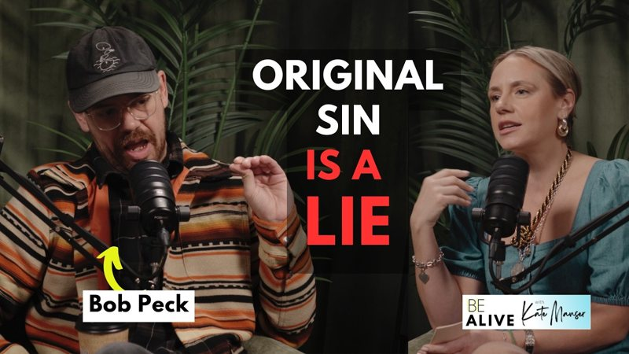
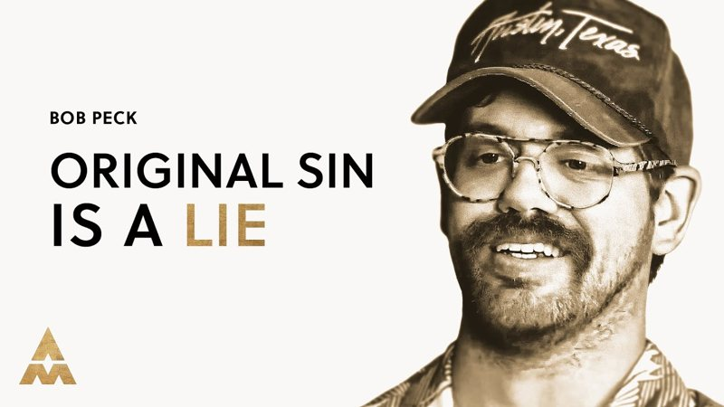
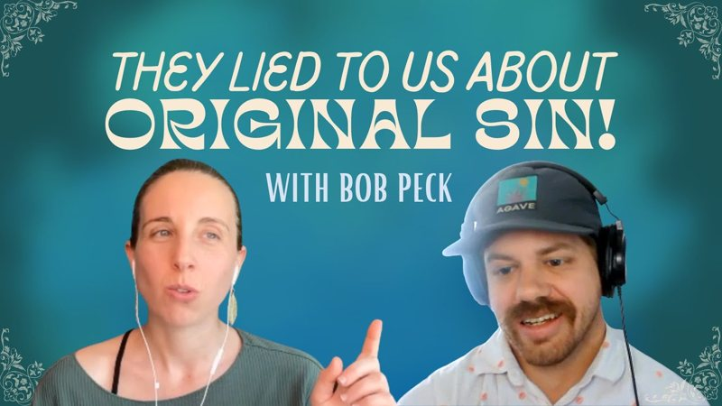

Bob Peck
Writer, filmmaker and producer focusing on mystic spirituality.
- Book
- Original Sin Is A Lie: How Spirituality Defies Dogma and Reveals Our True Self (2022), in English and Spanish, with an audiobook read by Bob
- Building
- Teach Wisdom Traditions, curricula on the world's wisdom traditions
- Films
- The Kingdom Within (2015), Peace Is Boring (2016), Solidarity (2020)
- Audience
- 70,000+ across Instagram, TikTok and YouTube
- Handles
- @bobpeck on Instagram and Threads, @iambobpeck on TikTok and YouTube
- Reviews
- 4.8 stars on Amazon (81 ratings), 5.0 on Audible (41 ratings) and 4.56 on Goodreads (103 ratings) · read them
- Based in
- Texas
“While Original Sin is a lie, Bob Peck is not. A lot of spiritual books come off as too heady or too far removed… Bob is relatable, funny, wise and insightful.”“Alan Watts in modern time,” Amazon review
Copy and paste
Bob Peck is a writer and filmmaker on mystic spirituality, author of Original Sin Is A Lie and founder of Teach Wisdom Traditions.
Bob Peck is a writer, filmmaker and producer focusing on mystic spirituality. He holds a B.S. in Radio-Television-Film and a B.A. in Religious Studies from the University of Texas at Austin, and is a certified mindfulness teacher. He is the founder of Teach Wisdom Traditions, which builds curricula and classroom materials on the world's wisdom traditions for schools, educators and facilitators. A frequent guest on spirituality and religion podcasts, he has taught this material in schools, in prisons, and at outdoor patio tables in bars in Austin, Texas.
Bob Peck is a writer, filmmaker and producer focusing on mystic spirituality, and the author of Original Sin Is A Lie: How Spirituality Defies Dogma and Reveals Our True Self. He holds a B.S. in Radio-Television-Film and a B.A. in Religious Studies from the University of Texas at Austin, and is a certified mindfulness teacher. His documentaries include The Kingdom Within, on Christianity and yoga, Peace Is Boring, a series with everyday Muslims, and Solidarity, on Palestine and Israel. He spent nearly a decade in tech, at Meta and then TikTok, while writing and filming on the side, and he calls that life the mystic in the machine. He is the founder of Teach Wisdom Traditions, which builds curricula and classroom materials on the world's wisdom traditions for schools, educators and facilitators. A frequent guest on spirituality and religion podcasts, he has taught this material in schools, in prisons, and at outdoor patio tables in bars in Austin, Texas.
Download


What Bob can talk about
- Where original sin actually came fromNot Genesis and not Jesus, but a fourth-century argument, and what Jesus may have meant instead. The doorway for people who left church but not God.
- The world mystics of historyChristian, Hindu, Buddhist, Sufi, Jewish and Taoist mystics pointing at the same thing, and the lives they lived to find it.
- Advaita and A Course in MiraclesNonduality from Ramana Maharshi and Nisargadatta to the Course, and what "not two" means on a Tuesday.
- The Gita, the Buddha and the TibetansHindu and Buddhist wisdom for Western seekers, from Krishna's battlefield to Milarepa's cave.
- Taoist poetryLaozi and Zhuangzi, the funniest and most useful sages in the canon.
- The SufisRumi, al-Hallaj and the lovers of God who got in trouble for saying so.
- The GnosticsThe Gospel of Thomas, the Nag Hammadi library, and the Christianity that didn't make the cut.
- A mystic in the machineKeeping a contemplative practice through a career at Meta and TikTok.
- Teaching wisdom traditionsBringing the mystics into classrooms, prisons and circles.
Questions that land
- Why write a book called Original Sin Is A Lie?
- If original sin isn't in Genesis, where did it come from?
- What do mystics from different traditions actually agree on?
- What is nonduality, and how do Advaita and A Course in Miracles point at the same thing?
- What can a Western seeker take from the Gita, the Buddha and the Tibetan masters?
- Why are so many mystics, from Zhuangzi to the Sufis, so funny?
- Who were the Gnostics, and what got left out of the Bible?
- How did you keep a spiritual practice alive inside big tech?
- Which mystic would you want listeners to read first?
Shows Bob has been on

Third Eye DropsThe Esoteric Teachings of Jesus
Be Alive PodcastOriginal Sin Is a Lie
Aubrey Marcus PodcastChristianity: The Beauty and Confusion Golden Frequency PodcastYou're Not Dirty Xian ArchiveDid Jesus Know Kriya Yoga?
The Inspired Artist PodcastThey Lied to Us About Original Sin